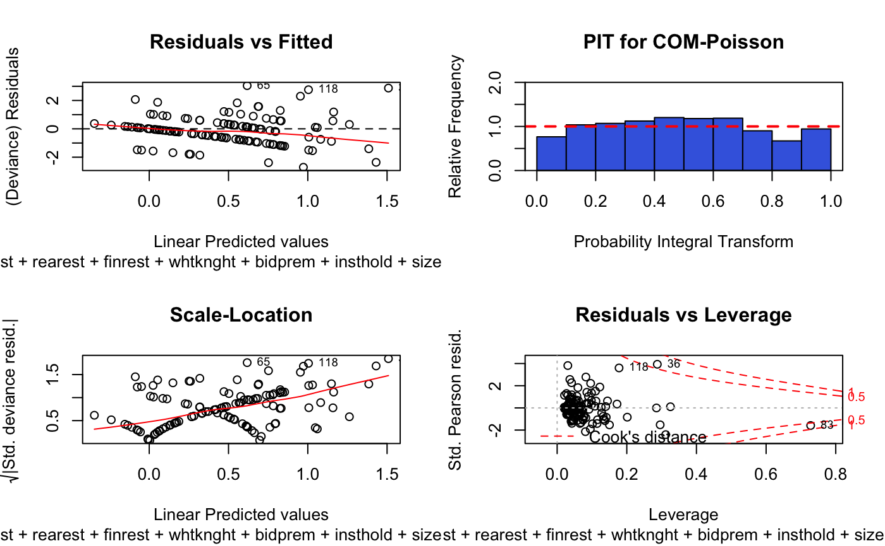

R/glm.cmp.R
glm.cmp.RdThe function glm.cmp is used to fit a mean parametrized Conway-Maxwell Poisson
generalized linear model with a log-link by using Fisher Scoring iteration.
glm.cmp(formula, data, offset = NULL, subset, na.action, betastart = NULL, lambdalb = 1e-10, lambdaub = 1000, maxlambdaiter = 1e3, tol = 1e-6, contrasts = NULL)
| formula | an object of class 'formula': a symblic desciption of the model to be fitted. |
|---|---|
| data | an optional data frame containing the variables in the model |
| offset | this can be used to specify an *a priori* known component to be included
in the linear predictor during fitting. This should be |
| subset | an optional vector specifying a subset of observations to be used in the fitting process. |
| na.action | a function which indicates what should happen when the data contain NAs. The default is set by the na.action setting of options, and is na.fail if that is unset. The ‘factory-fresh’ default is na.omit. Another possible value is NULL, no action. Value na.exclude can be useful. |
| betastart | starting values for the parameters in the linear predictor for mu. |
| lambdalb, lambdaub | numeric: the lower and upper end points for the interval to be
searched for lambda(s). The default value for lambdaub should be sufficient for small to
moderate size nu. If nu is large and required a larger |
| maxlambdaiter | numeric: the maximum number of iterations allowed to solve for lambda(s). |
| tol | numeric: the convergence threshold. A lambda is said to satisfy the mean constraint if the absolute difference between the calculated mean and a fitted values is less than tol. |
| contrasts | an optional list. See the contrasts.arg of model.matrix.default. |
A fitted model object of class cmp similar to one obtained from glm
or glm.nb.
The function summary (i.e., summary.cmp) can be used to obtain
and print a summary of the results.
The function plot (i.e., plot.cmp) can be used to produce a range
of diagnostic plots.
The generic assessor functions coef (i.e., coef.cmp),
logLik (i.e., logLik.cmp)
fitted (i.e., fitted.cmp),
nobs (i.e., nobs.cmp),
AIC (i.e., AIC.cmp) and
residuals (i.e., residuals.cmp)
can be used to extract various useful features of the value
returned by glm.cmp.
An object class 'glm.cmp' is a list containing at least the following components:
a named vector of coefficients
approximate standard errors (using observed rather than expected information) for coefficients
the response residuals (i.e., observed-fitted)
the fitted mean values
the numeric rank of the fitted linear model
the linear fit on log scale
the residuals degrees of freedom
the residual degrees of freedom for the null model
The deviance for the null model. The null model will include only the intercept.
the y vector used.
the model matrix
the model frame
the matched call
the formula supplied
the terms object used
the data argument
the offset vector used
the final lambdaub used
Fit a mean-parametrizied COM-Poisson regression using maximum likelihood estimation via an iterative Fisher Scoring algorithm.
The COM-Poisson regression model is
Y_i ~ CMP(mu_i, nu),
where
E(Y_i) = mu_i = exp(x_i^T beta),
and nu > 0 is the dispersion parameter.
The fitted COM-Poisson distribution is over- or under-dispersed if nu < 1 and nu > 1 respectively.
Fung, T., Alwan, A., Wishart, J. and Huang, A. (2019). mpcmp: Mean-parametrized
Conway-Maxwell Poisson Regression. R package version 0.1.4.
Huang, A. (2017). Mean-parametrized Conway-Maxwell-Poisson regression models for dispersed counts. Statistical Modelling 17, 359--380.
### Huang (2017) Page 368--370: Overdispersed Attendance data data(attendance) M.attendance <- glm.cmp(daysabs~ gender+math+prog, data=attendance) M.attendance#> #> Call: glm.cmp(formula = daysabs ~ gender + math + prog, data = attendance) #> #> Linear Model Coefficients: #> (Intercept) gendermale math progAcademic progVocational #> 2.72000 -0.21500 -0.00633 -0.42500 -1.25000 #> #> Dispersion (nu): 0.02054931 #> Degrees of Freedom: 313 Total (i.e. Null); 309 Residual #> Null Deviance: 456.388 #> Residual Deviance: 377.8725 #> AIC: 1739.061 #>summary(M.attendance)#> #> Call: glm.cmp(formula = daysabs ~ gender + math + prog, data = attendance) #> #> Deviance Residuals: #> Min 1Q Median 3Q Max #> -2.1936 -1.1177 -0.3978 0.2967 2.8175 #> #> Linear Model Coefficients: #> Estimate Std.Err Z value Pr(>|z|) #> (Intercept) 2.7151 0.1902 14.28 < 2e-16 *** #> gendermale -0.2149 0.1171 -1.84 0.0663 . #> math -0.0063 0.0024 -2.65 0.0079 ** #> progAcademic -0.4253 0.1693 -2.51 0.0120 * #> progVocational -1.2540 0.1893 -6.62 3.5e-11 *** #> --- #> Signif. codes: 0 ‘***’ 0.001 ‘**’ 0.01 ‘*’ 0.05 ‘.’ 0.1 ‘ ’ 1 #> #> (Dispersion parameter for Mean-CMP estimated to be 0.02055) #> #> Null deviance: 456.39 on 313 degrees of freedom #> Residual deviance: 377.87 on 309 degrees of freedom #> #> AIC: 1739.061 #>### Barbour & Brown (1974): Overdispersed Fish data#> #> Call: glm.cmp(formula = species ~ 1 + log(area), data = fish) #> #> Linear Model Coefficients: #> (Intercept) log(area) #> 2.330 0.182 #> #> Dispersion (nu): 0.01880634 #> Degrees of Freedom: 69 Total (i.e. Null); 68 Residual #> Null Deviance: 102.58 #> Residual Deviance: 59.98932 #> AIC: 638.8879 #>summary(M.fish)#> #> Call: glm.cmp(formula = species ~ 1 + log(area), data = fish) #> #> Deviance Residuals: #> Min 1Q Median 3Q Max #> -2.1271 -0.8060 -0.3349 0.4252 2.7193 #> #> Linear Model Coefficients: #> Estimate Std.Err Z value Pr(>|z|) #> (Intercept) 2.3334 0.2334 10.00 <2e-16 *** #> log(area) 0.1821 0.0286 6.37 2e-10 *** #> --- #> Signif. codes: 0 ‘***’ 0.001 ‘**’ 0.01 ‘*’ 0.05 ‘.’ 0.1 ‘ ’ 1 #> #> (Dispersion parameter for Mean-CMP estimated to be 0.01881) #> #> Null deviance: 102.580 on 69 degrees of freedom #> Residual deviance: 59.989 on 68 degrees of freedom #> #> AIC: 638.8879 #>### Huang (2017) Page 371--372: Underdispersed Takeover Bids data data(takeoverbids) M.bids <- glm.cmp(numbids ~ leglrest + rearest + finrest + whtknght + bidprem + insthold + size + sizesq + regulatn, data=takeoverbids) M.bids#> #> Call: glm.cmp(formula = numbids ~ leglrest + rearest + finrest + whtknght + #> bidprem + insthold + size + sizesq + regulatn, data = takeoverbids) #> #> Linear Model Coefficients: #> (Intercept) leglrest rearest finrest whtknght bidprem #> 0.99000 0.26800 -0.17300 0.06780 0.48100 -0.68500 #> insthold size sizesq regulatn #> -0.36800 0.17900 -0.00758 -0.03750 #> #> Dispersion (nu): 1.741934 #> Degrees of Freedom: 125 Total (i.e. Null); 116 Residual #> Null Deviance: 181.5419 #> Residual Deviance: 130.6078 #> AIC: 382.1777 #>summary(M.bids)#> #> Call: glm.cmp(formula = numbids ~ leglrest + rearest + finrest + whtknght + #> bidprem + insthold + size + sizesq + regulatn, data = takeoverbids) #> #> Deviance Residuals: #> Min 1Q Median 3Q Max #> -2.70858 -0.70455 -0.07752 0.35979 3.04475 #> #> Linear Model Coefficients: #> Estimate Std.Err Z value Pr(>|z|) #> (Intercept) 0.9895 0.4364 2.27 0.02336 * #> leglrest 0.2678 0.1232 2.17 0.02968 * #> rearest -0.1734 0.1552 -1.12 0.26377 #> finrest 0.0678 0.1748 0.39 0.69820 #> whtknght 0.4813 0.1320 3.65 0.00027 *** #> bidprem -0.6847 0.3083 -2.22 0.02638 * #> insthold -0.3678 0.3476 -1.06 0.29003 #> size 0.1793 0.0477 3.76 0.00017 *** #> sizesq -0.0076 0.0025 -3.04 0.00233 ** #> regulatn -0.0375 0.1306 -0.29 0.77419 #> --- #> Signif. codes: 0 ‘***’ 0.001 ‘**’ 0.01 ‘*’ 0.05 ‘.’ 0.1 ‘ ’ 1 #> #> (Dispersion parameter for Mean-CMP estimated to be 1.742) #> #> Null deviance: 181.54 on 125 degrees of freedom #> Residual deviance: 130.61 on 116 degrees of freedom #> #> AIC: 382.1777 #>### Huang (2017) Page 373--375: Underdispersed Cotton bolls data ### Model fitting for predictor V#> #> Call: glm.cmp(formula = nc ~ 1 + stages:def + stages:def2, data = cottonbolls) #> #> Linear Model Coefficients: #> (Intercept) stagesvegetative:def stagesflower bud:def #> 2.19000 0.43700 0.29000 #> stagesblossom:def stagesfig:def stagescotton boll:def #> -1.24000 0.36500 0.00895 #> stagesvegetative:def2 stagesflower bud:def2 stagesblossom:def2 #> -0.80500 -0.48800 0.67300 #> stagesfig:def2 stagescotton boll:def2 #> -1.31000 -0.02000 #> #> Dispersion (nu): 4.862578 #> Degrees of Freedom: 124 Total (i.e. Null); 114 Residual #> Null Deviance: 346.6977 #> Residual Deviance: 125.5356 #> AIC: 440.8227 #>summary(M.bolls)#> #> Call: glm.cmp(formula = nc ~ 1 + stages:def + stages:def2, data = cottonbolls) #> #> Deviance Residuals: #> Min 1Q Median 3Q Max #> -2.30023 -0.68371 -0.04976 0.75070 2.74763 #> #> Linear Model Coefficients: #> Estimate Std.Err Z value Pr(>|z|) #> (Intercept) 2.1896 0.0294 74.54 < 2e-16 *** #> stagesvegetative:def 0.4369 0.2394 1.82 0.068 . #> stagesflower bud:def 0.2897 0.2356 1.23 0.219 #> stagesblossom:def -1.2425 0.2829 -4.39 1.1e-05 *** #> stagesfig:def 0.3649 0.2644 1.38 0.168 #> stagescotton boll:def 0.0089 0.2336 0.04 0.969 #> stagesvegetative:def2 -0.8052 0.2717 -2.96 0.003 ** #> stagesflower bud:def2 -0.4879 0.2630 -1.85 0.064 . #> stagesblossom:def2 0.6728 0.3192 2.11 0.035 * #> stagesfig:def2 -1.3103 0.3166 -4.14 3.5e-05 *** #> stagescotton boll:def2 -0.0200 0.2562 -0.08 0.938 #> --- #> Signif. codes: 0 ‘***’ 0.001 ‘**’ 0.01 ‘*’ 0.05 ‘.’ 0.1 ‘ ’ 1 #> #> (Dispersion parameter for Mean-CMP estimated to be 4.863) #> #> Null deviance: 346.70 on 124 degrees of freedom #> Residual deviance: 125.54 on 114 degrees of freedom #> #> AIC: 440.8227 #>